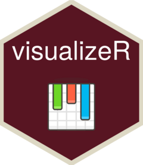

Changelog
Source:NEWS.md
visualizeR 0.8.9000
- Add
waffle(). - Add a
pal_default()function as a fallback for scale functions and as an initiative intheme_reach(). It usesviridis::magma(). - Update of AGORA palettes.
- Some other small bug fixes.
visualizeR 0.7.9000
- Add
dumbbell(). - Add
alluvial() - Add
donut() - Add
lollipop() - Add further parameters to
theme_reach(), including grid lines args.
visualizeR 0.5.9000
- Add wrapping of title, subtitle and caption thanks to
ggtext - Add wrapping of labels for
bar()x-discrete scale. - Add further parameters to
theme_reach()
visualizeR 0.4.9000
- Breaking changes: remove dependency to
ggblanket. - Full rewrite of
theme_reach(). -
bar_reachis nowbar()and theming is passed through argumentthemefor which default istheme_reach(). -
point_reachis nowpoint()and theming is passed through argumentthemefor which default istheme_reach().
visualizeR 0.3.9000
- Breaking changes: update to
ggblanketv1.6.1. - Add plotting functions for indicator maps.
visualizeR 0.2.9000
- Breaking changes: almost all functions got refinements, and there are new functions, typically
hbar()becomesbar_reach()andpoint_reach()is added. - Following
theme_reach()is now used by all plotting functions. - Add README.md.
visualizeR 0.1.6.9000
- IMPACT colors and palettes are added: function
cols_impact()pal_impact(). - Color palettes from REACH are added (2 to 7 continuous palettes) ; see updated
cols_reach()andpal_reach().
visualizeR 0.1.4.9000
-
hbar()gains a new boolean argumentreverseto pass topal_reach()orpal_agora(), indicating if the color palette should be reversed or not.
visualizeR 0.1.2.9000
- There was a duplicate
scale_color()function, which should have been and is nowscale_fill()